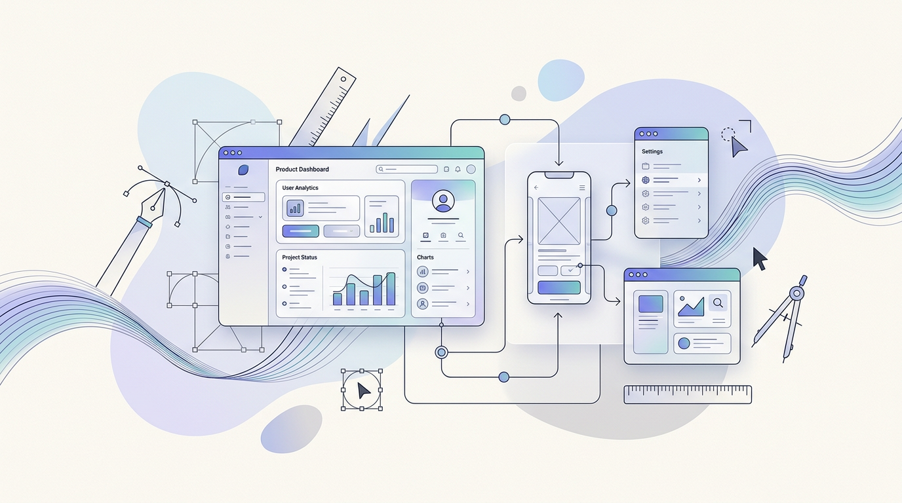
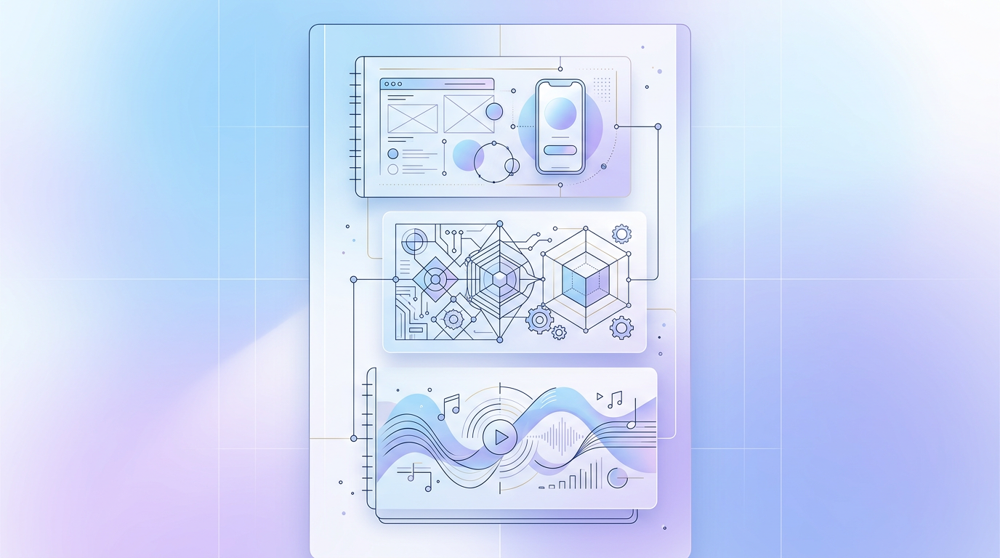

Product Design Portfolio
5+
Apps and experiences shaped across fintech, commerce, and culture.
30M+
Monthly user reach through products shipped for large audiences.
THI
Design MSc focus with leadership, systems thinking, and craft.
Designing simple digital products with precision, clarity, and character.
Hi, I'm Mojtaba, a product designer with engineering in my head and music in my heart. I've helped shape products used by more than 30 million people, and I'm currently studying Design Leadership at THI.
Minimal, modern, and intentionally calm. Inspired by premium product sites and adapted for your own story.

EngineeringSystems, logic, and structure
MusicRhythm, sensitivity, and flow
How I Work
Research-led, visually clear, and designed to scale.
I work at the intersection of UX, UI, product thinking, and systems. The goal is always the same: turn complexity into flows that feel obvious.
Design with focus
I prefer interfaces that remove noise, guide attention, and make the next step feel effortless.
Systems over decoration
Engineering thinking helps me build structure, consistency, and decisions that hold up across products.
Detail with empathy
From research plans to visual refinement, I care about how a product looks, feels, and earns trust.
Projects & Experiences
Selected work across commerce, fintech, AR, and UX strategy.
These projects come from the original portfolio structure, now presented with a more polished and product-focused visual language.
Torob
Leading e-commerce platform that helps more than 30 million users find the best prices from over 180 thousand shops.
Case StudyBaloot
Iran's first micro-saving and investment platform, helping people save small amounts automatically and invest with more confidence.
Case StudyShams-ol-Emareh
An AR guidance platform for museum visitors, designed to make cultural exploration more accessible and engaging.
Case Study5 Day UX Challange
A seller portal case study for ebay focused on business seller workflows, promotions, and performance insights.
Case StudyAmanj
A digital product to improve the freelancing project experience and address common pain points for designers.
Case Study
My Story ;)
From computer engineering to product design leadership.
My background moves between technical systems, digital products, music, and craft. That combination shapes how I design: structured, human, and expressive without being loud.

Kind Words
Recommendations from collaborators, leaders, and mentors.
The recommendations below are preserved from the previous portfolio and presented in a more editorial, readable layout.
I highly recommend Mojtaba for any advanced academic or professional role in Product Design, UX/UI, Product Management, or UX Research or any related field. I am confident that he will continue to excel and make significant contributions to any team or organization he joins.

Prof. Dr. (Ph.D.) Bernhard Rothbucher
Design Leadership Course Director at THI
Bernhard managed Mojtaba directly
It is without hesitation that I recommend Mojtaba for any role that demands a highly skilled and dedicated product designer. He brought creativity, technical understanding, and strong user-centered thinking into our products.

Mojtaba Danaei
Co-founder & CEO at Baloot Co.
Mojtaba managed Mojtaba directly
Working with Mojtaba Torabi at Torob was a true pleasure. His design skills are undeniably impressive, but his superpower lies in accountability combined with a bias for action.

MohammadHassan Momenian
VP of Product at Torob
MohammadHassan managed Mojtaba directly
Mojtaba supported #bastoy in a crucial phase of its development as a designer. His work stands out for clarity, a modern understanding of user experience, and strong responsiveness to feedback.

Tobias Hiebl
Founder & CEO at #bastoy
Tobias managed Mojtaba directly
See more detailed case studies and portfolio references.
Behance Case Studies